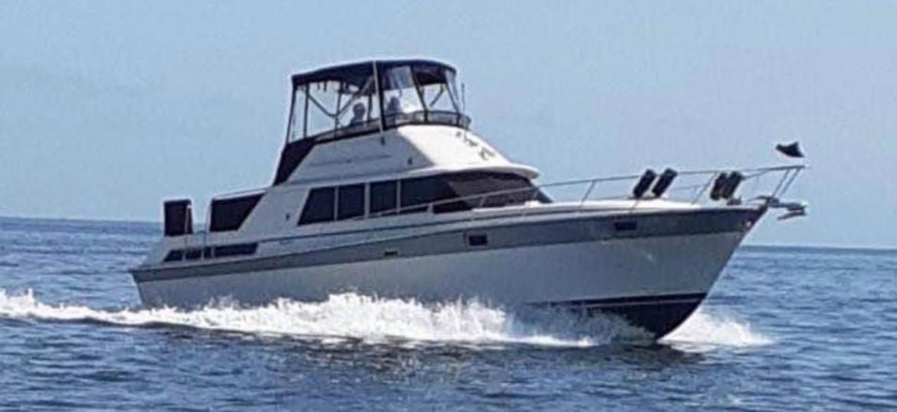

B-Scout Boat Guide · SILV-40-AC
Silverton 40 Aft Cabin Double Cabin Motor Yacht
1982–1990
The Silverton 40 Aft Cabin is a production aft-cabin motor yacht built around high interior volume, two-stateroom privacy and twin-engine coastal performance. Its multi-level deck plan trades easy all-on-one-level movement for substantial accommodation in a relatively modest overall length.

- Length
- 40 ft
- Beam
- 14 ft
- Draft
- 3 ft
- Hull behaviour
- Planing
- Fuel
- Gasoline
- Propulsion
- Shaft
- Engine configuration
- Twin gasoline inboards
- Boat family
- Motor Yacht
- Construction
- Fiberglass
Best for
- Couples or families prioritizing accommodation over low operating cost
- Inland and coastal cruising with marina-based use
- Buyers wanting two private sleeping areas
Trade-offs
- Multiple steps between swim platform, aft deck, bridge and cabins
- High windage and relatively high air draft
- Twin-engine operating and maintenance cost
- Age and system complexity make condition more important than model reputation
Known concerns
- No model-specific concern has been promoted to B-Scout’s evidence threshold. This does not mean the model has no age-, condition- or hull-specific risks.
Inspection focus
- Verify moisture around deck hardware, windows, hatches and rail bases
- Inspect flybridge, arch, windshield and upper-deck penetrations for water intrusion and structural movement
- Inspect fuel, water and waste tanks plus hoses and fittings
- Inspect engines, transmissions or sterndrives, exhaust and cooling systems
- Review AC/DC wiring, shore-power equipment and documented electrical modifications
- Confirm steering, trim-tab and generator operation where fitted
- Inspect aft-cabin windows, aft-deck enclosure and access steps
Continue researching
Related boat models
Silverton 34 Motor Yacht Aft Cabin Motor Yacht
39.83 ft · Planing
Silverton 352 Motor Yacht SideWalk Motor Yacht
41.33 ft · Planing
Silverton 372 / 392 Motor Yacht SideWalk Motor Yacht
43.75 ft · Planing
Bayliner 3788 Motor Yacht Two-Generation Flybridge Motor Yacht
39.33 ft · Planing
Bayliner 4087 Cockpit Motor Yacht Cockpit Motor Yacht
41.42 ft · Planing
Sea Ray 390 / 40 Motor Yacht Flush-Deck Motor Yacht
41.75 ft · Planing
About this record
B-Scout preserves uncertainty: missing information remains unknown rather than being treated as a negative. Specifications and guidance describe the model record; individual boats can differ by year, equipment, refit and condition.